Hallo!
Dies ist eine Projektseite über den Lernprozess von Lua und das Game Framework Löve2d
„Ein kleines Bullethell Spiel, bei dem man die Gegner vernichten muss, während man ihren Schüssen ausweicht. Dabei wird das Spiel nach jedem Boss schwieriger.“
Dies ist die Dokumentation die ich während der Entwicklung von Space Shooter geschrieben habe. Nachfolgend einige Funktionen die näher beschrieben werden:
Die Funktion CheckCollision habe ich nicht selber erstellt, sondern vom Love2d-Wiki. Die Funktion erkennt wenn zwei Objekte sich überschneiden und kann verwendet werden um eine Kollision zu erstellen.
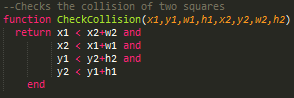Die Funktion CreateEnemy fügt Gegner in eine Tabelle ein und berechnet wie sie sich über den Bildschirm bewegen, ebenfalls löscht sie Gegner die sich ausserhalb des Bildschirmes befinden. Zu dem erstellt es für jeden Gegner eine Tabelle, welche später die Schüsse beinhaltet.
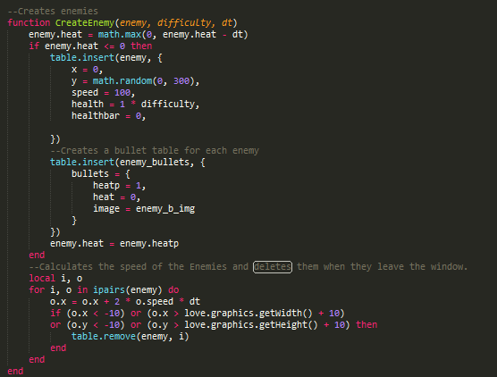Die Funktion EnemyBullets fügt für jeden Gegner Schüsse in eine Tabelle ein, hier werden ebenfalls die Flugbahnen der Schüsse berechnet, sowie das Löschen der Schüsse beim Verlassen des Bildschirmes.
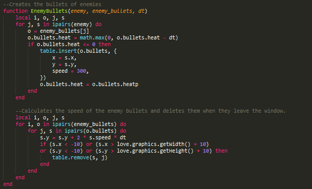Die Funktion PlayerBullet fügt immer wenn die Space-Taste gedrückt ist, Schüsse des Spielers in eine Tabelle ein, die Flugbahnen dieser wird danach berechnet, auch hier werden die Schüsse beim Verlassen des Bildschirmes gelöscht.
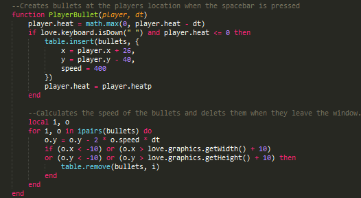Die Funktion DrawTable zeichnet den Inhalt einer Tabelle.
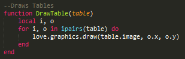Die Funktion BossAttack1 fügt die Schüsse des Bosses in eine Tabelle ein. Auch hier werden wieder die Flugbahnen berechnet, hier wird einfach noch der Winkel angegeben, in welchen die Schüsse sich bewegen sollen. Verlassen die Schüsse den Bildschirm werden sie gelöscht
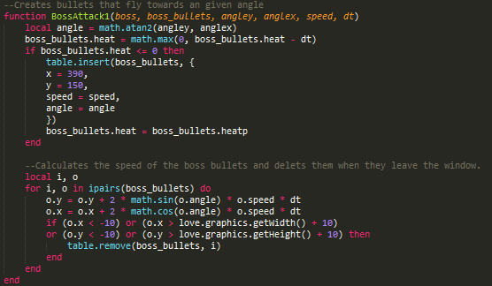Die Funktion BossAttack2 fügt die Schüsse des Bosses in eine Tabelle ein. Der Punk auf der X-Achse ist hier zufällig generiert. Die Flugbahnen der Schüsse werden auch hier in der Funktion selbst berechnet. Verlassen die Schüsse den Bildschirm werden sie gelöscht.
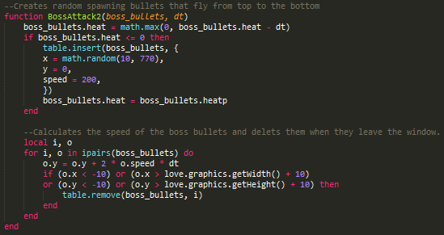Hier werde ich einige weitere Strukturen aufzeigen, wie z.B. Bewegung des Spielers oder Beenden des Spieles.
Der Spieler kann sich mittels WASD in alle Richtungen bewegen.
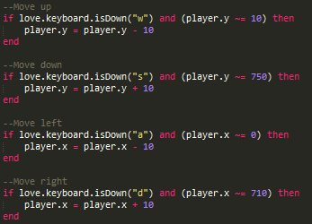Mittels der Escape-Taste kann man das Spiel ganz einfach schliessen, dabei wird nichts gespeichert.
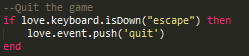Um Bilder verwenden zu können, müssen diese zuerst vorgeladen werden.
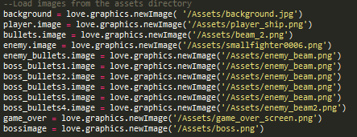Alle meine Gegner und der Spieler besitzen einen Lebensbalken. Dieser funktioniert wie folgt.
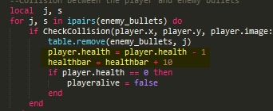Jedes Mal wenn z.B. der Spieler getroffen wird, wird einer Variablen ein Betrag, hier 10, hinzugefügt. Dieser wird dann später beim Zeichnen des Lebensbalkens wieder abgezogen.
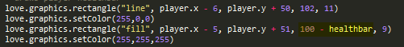Das Spiel wird mittels WASD gesteuert, mit der Leertaste können Laser abgefeuert werden.
Hier einige Screenshots vom Endprodukt:
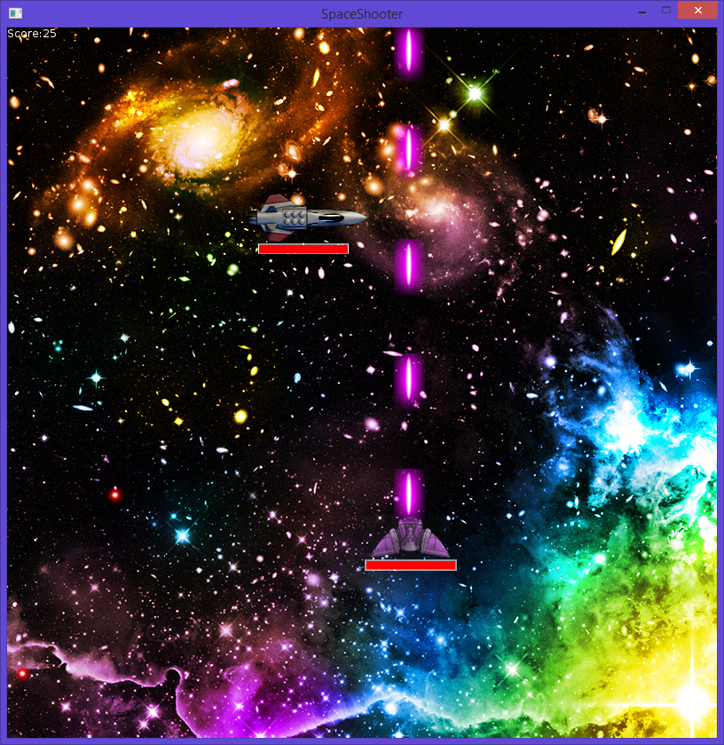Game Over Screen, hier wird der erreichte Score ausgegeben. Man kann das Spiel neustarten in dem man „r“ drückt.
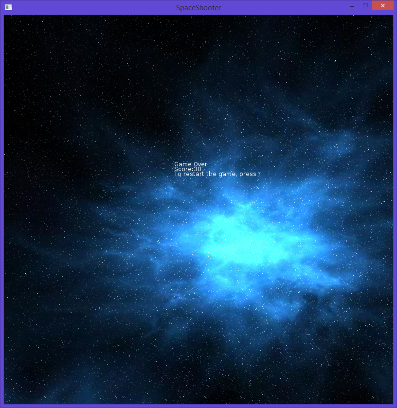 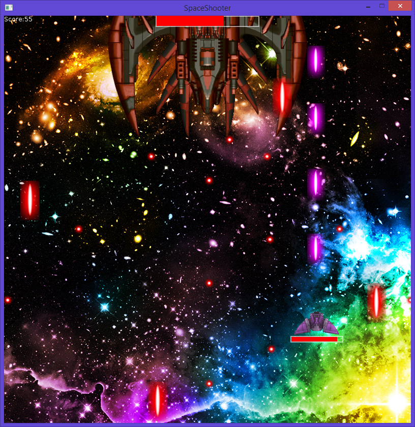